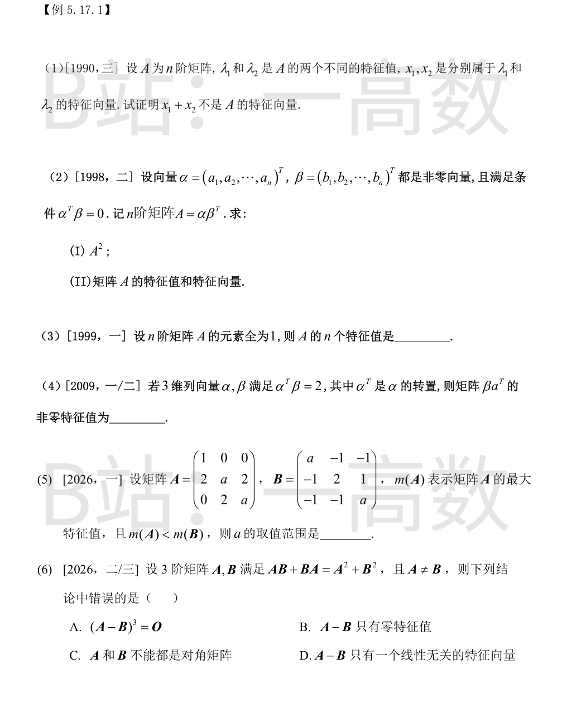
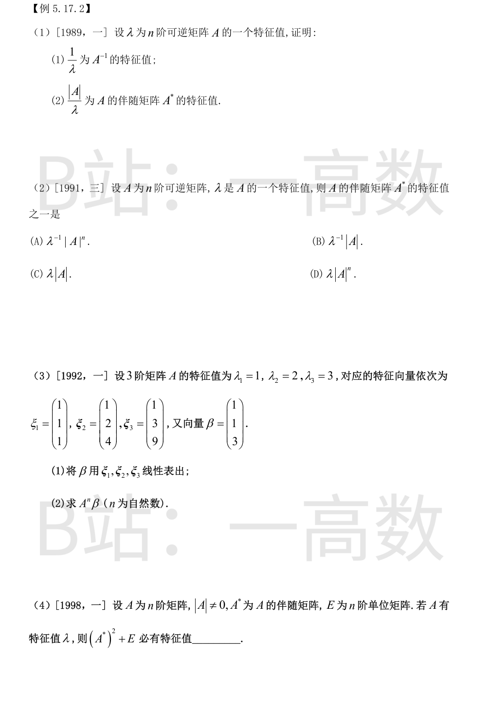
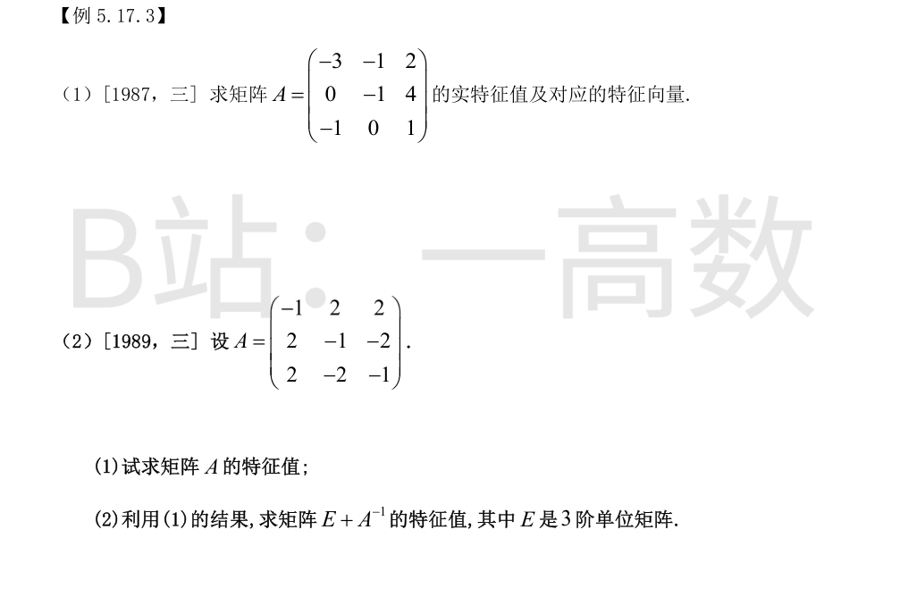
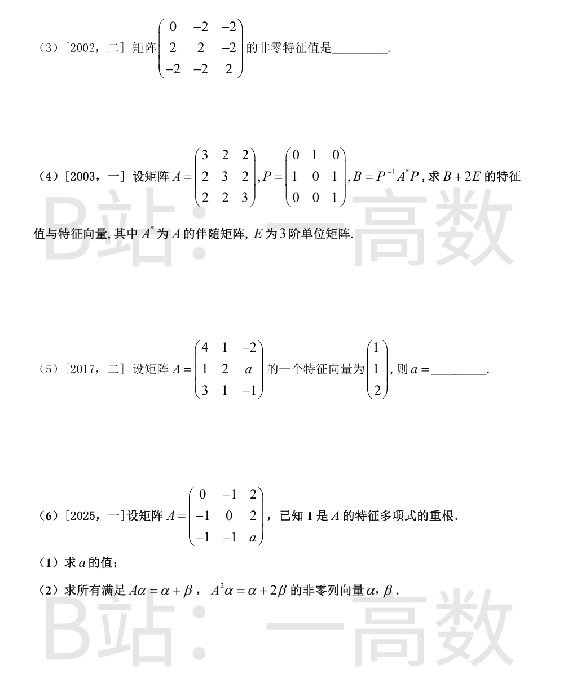
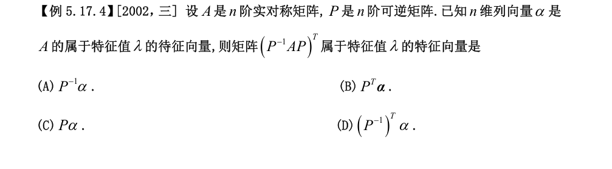
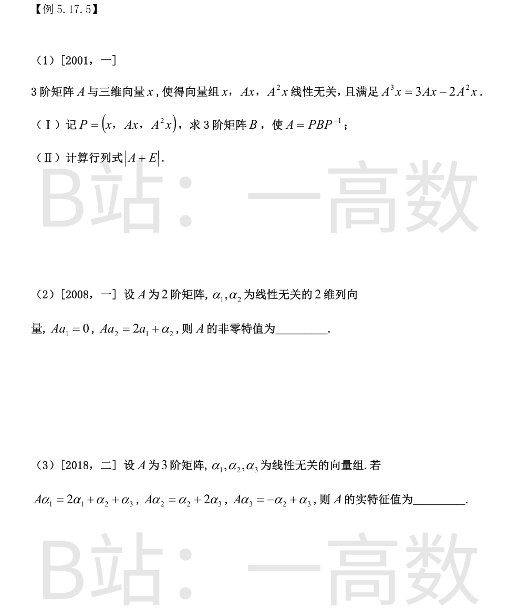

反证法。设 $x_1+x_2$ 是 $A$ 的属于 $\lambda$ 的特征向量，则
$$A(x_1+x_2)=\lambda(x_1+x_2).$$
又 $Ax_1=\lambda_1 x_1,\ Ax_2=\lambda_2 x_2$，故
$$\lambda_1 x_1+\lambda_2 x_2=\lambda x_1+\lambda x_2,$$
即 $(\lambda_1-\lambda)x_1+(\lambda_2-\lambda)x_2=0$。
属于不同特征值的特征向量线性无关，故 $x_1,x_2$ 线性无关，于是
$$\lambda_1-\lambda=0,\qquad \lambda_2-\lambda=0,$$
得 $\lambda_1=\lambda_2$，与 $\lambda_1\neq\lambda_2$ 矛盾。故 $x_1+x_2$ 不是 $A$ 的特征向量。
**(I)**
$$A^2=\alpha\beta^T\alpha\beta^T=\alpha(\beta^T\alpha)\beta^T=(\alpha^T\beta)\,\alpha\beta^T=O\cdot A=O.$$
**(II)** 由 $A^2=O$，$A$ 的任一特征值 $\lambda$ 满足 $\lambda^2=0$，故 $\lambda=0$（$n$ 重）。（又 $\mathrm{tr}(A)=\beta^T\alpha=\alpha^T\beta=0$ 相符。）
因 $\alpha\neq 0$，
$$Ax=\alpha(\beta^Tx)=0\iff \beta^Tx=0 .$$
故属于 $\lambda=0$ 的全部特征向量为 $\beta^Tx=0$ 的全部非零解：取其基础解系 $\xi_1,\dots,\xi_{n-1}$（共 $n-1$ 个，因 $\beta\neq0$），则
$$x=k_1\xi_1+\cdots+k_{n-1}\xi_{n-1}\quad(k_1,\dots,k_{n-1}\ \text{不全为}\ 0).$$
记 $e=(1,1,\dots,1)^T$，则 $A=ee^T$。
$Ae=(e^Te)e=ne$，故 $n$ 是 $A$ 的特征值；又 $r(A)=1$，故 $0$ 至少是 $n-1$ 重特征值，且 $n$ 个特征值之和 $=\mathrm{tr}(A)=n$，恰好 $n+0+\cdots+0=n$。
所以 $A$ 的 $n$ 个特征值为 $n,0,\dots,0$（$0$ 共 $n-1$ 个）。
$$(\beta\alpha^T)\beta=\beta(\alpha^T\beta)=2\beta,$$
且 $\beta\neq 0$（否则 $\alpha^T\beta=0\neq2$），故 $2$ 是 $\beta\alpha^T$ 的特征值。
又 $r(\beta\alpha^T)\le 1$，故 $0$ 至少是二重特征值，非零特征值只有一个，即为 $2$。
**A 的特征值**：$|A-\lambda E|=(1-\lambda)\big[(a-\lambda)^2-4\big]$，得
$$\lambda_1=1,\quad \lambda_2=a-2,\quad \lambda_3=a+2,$$
故 $m(A)=\max\{1,a+2\}=\begin{cases}a+2,&a\ge-1,\\ 1,&a<-1.\end{cases}$
**B 的特征值**：$B(1,0,1)^T=(a-1)(1,0,1)^T$，得 $\lambda=a-1$；由 $\mathrm{tr}(B)=2a+2$ 与 $\det B=2a^2-2$，其余两特征值之和为 $a+3$、积为 $2(a+1)$，解 $\mu^2-(a+3)\mu+2(a+1)=0$，判别式 $(a-1)^2$，得
$$\mu_1=a+1,\qquad \mu_2=2 .$$
即 $B$ 的特征值为 $a-1,\ a+1,\ 2$，故
$$m(B)=\begin{cases}a+1,&a\ge 1,\\ 2,&a<1.\end{cases}$$
**分域比较 $m(A)<m(B)$**：
- $a<-1$：$m(A)=1<2=m(B)$，成立；
- $-1\le a<1$：需 $a+2<2$，即 $a<0$，得 $-1\le a<0$；
- $a\ge1$：需 $a+2<a+1$，不成立。
综上 $a<0$。
条件即 $A^2-AB-BA+B^2=O$，亦即
$$(A-B)^2=O .$$
记 $N=A-B\neq O$（因 $A\neq B$），则 $N^2=O$。
**A 正确**：$N^3=N^2\cdot N=O$。
**B 正确**：$N^2=O\Rightarrow$ 任一特征值满足 $\lambda^2=0\Rightarrow$ 特征值全为 $0$。
**C 正确**：若 $A,B$ 均为对角阵，则 $AB=BA$，条件化为 $2AB=A^2+B^2$，即 $(A-B)^2=O$；对角阵之差仍是对角阵，其平方为零必为零矩阵，得 $A=B$，矛盾。故 $A,B$ 不能都是对角阵。
（满足条件的例子确实存在：取 $A=N$（任一 $N^2=O,\ N\neq O$ 的 3 阶幂零阵），$B=O$。）
**D 错误**：3 阶幂零阵若含 3 阶若尔当块则 $N^2\neq O$，故 $N$ 的若尔当型只能是 $J_2\oplus J_1$，恰有 $2$ 个线性无关特征向量，而非 $1$ 个。
故选 D。

设 $Ax=\lambda x,\ x\neq0$。
因 $A$ 可逆，$|A|=\prod\lambda_i\neq0$，故 $\lambda\neq0$。由 $Ax=\lambda x$ 得
$$x=\lambda A^{-1}x\ \Longrightarrow\ A^{-1}x=\frac{1}{\lambda}x,$$
即 $\dfrac{1}{\lambda}$ 是 $A^{-1}$ 的特征值（特征向量仍为 $x$）。
又 $A^{*}=|A|A^{-1}$，故
$$A^{*}x=|A|A^{-1}x=\frac{|A|}{\lambda}x,$$
即 $\dfrac{|A|}{\lambda}$ 是 $A^{*}$ 的特征值。
由上题，$A^{*}x=\dfrac{|A|}{\lambda}x=\lambda^{-1}|A|\,x$，故 $A^{*}$ 的特征值为 $\lambda^{-1}|A|$。
选 **B**。
**(1)** 设 $x_1\xi_1+x_2\xi_2+x_3\xi_3=\beta$：
$$\begin{cases}x_1+x_2+x_3=1,\\ x_1+2x_2+3x_3=1,\\ x_1+4x_2+9x_3=3.\end{cases}$$
第2式−第1式：$x_2+2x_3=0$；第3式−第2式：$2x_2+6x_3=2$，即 $x_2+3x_3=1$。
两式相减得 $x_3=1$，回代得 $x_2=-2,\ x_1=2$。故
$$\beta=2\xi_1-2\xi_2+\xi_3 .$$
**(2)** 由 $A\xi_i=\lambda_i\xi_i$ 得 $A^n\xi_i=\lambda_i^n\xi_i$：
$$A^n\beta=2\cdot1^n\xi_1-2\cdot2^n\xi_2+3^n\xi_3=2\xi_1-2^{n+1}\xi_2+3^n\xi_3,$$
即
$$A^n\beta=\begin{pmatrix}2-2^{n+1}+3^n\\ 2-2^{n+2}+3^{n+1}\\ 2-2^{n+3}+3^{n+2}\end{pmatrix}.$$
由 $|A|\neq0$ 知 $\lambda\neq0$。
$A^{*}$ 有特征值 $\dfrac{|A|}{\lambda}$（见例 5.17.2(1)），故 $(A^{*})^{2}$ 有特征值 $\left(\dfrac{|A|}{\lambda}\right)^{2}$，从而
$$(A^{*})^{2}+E\ \text{有特征值}\ \frac{|A|^{2}}{\lambda^{2}}+1.$$


$$|\lambda E-A|=\begin{vmatrix}\lambda+3&1&-2\\0&\lambda+1&-4\\1&0&\lambda-1\end{vmatrix}
=\lambda^{3}+3\lambda^{2}+\lambda-5=(\lambda-1)(\lambda^{2}+4\lambda+5).$$
由 $\lambda^2+4\lambda+5=0$ 得 $\lambda=-2\pm\mathrm{i}$（复根），故实特征值仅 $\lambda=1$。
解 $(A-E)x=0$：
$$\begin{pmatrix}-4&-1&2\\0&-2&4\\-1&0&0\end{pmatrix}x=0
\ \Longrightarrow\ x_1=0,\ x_2=2x_3 .$$
取 $x_3=1$ 得特征向量 $\xi=(0,2,1)^T$（验证：$A\xi=(0,2,1)^T=\xi$）。
故实特征值 $\lambda=1$，对应特征向量 $k(0,2,1)^T\ (k\neq0)$。
**(1)**
$$|\lambda E-A|=\begin{vmatrix}\lambda+1&-2&-2\\-2&\lambda+1&2\\-2&2&\lambda+1\end{vmatrix}
=\lambda^{3}+3\lambda^{2}-9\lambda+5=(\lambda-1)^{2}(\lambda+5).$$
（检验：迹 $=1+1-5=-3=\mathrm{tr}(A)$。）
故 $A$ 的特征值为 $\lambda=1$（二重）与 $\lambda=-5$。
**(2)** $A$ 无零特征值，故可逆。若 $Ax=\lambda x$，则
$$(E+A^{-1})x=\Big(1+\frac{1}{\lambda}\Big)x .$$
于是 $E+A^{-1}$ 的特征值为 $1+1=2$（二重）与 $1-\dfrac15=\dfrac45$。
记该矩阵为 $M=2N$，$N=\begin{pmatrix}0&-1&-1\\1&1&-1\\-1&-1&1\end{pmatrix}$。
$$|\lambda E-N|=-\lambda(\lambda-1)^{2}\quad(\text{按第一行展开计算可得})，$$
即 $N$ 的特征值为 $0,1,1$（检验迹：$0+1+1=2=\mathrm{tr}(N)$）。
故 $M=2N$ 的特征值为 $0,2,2$，非零特征值为 $2$（二重）。
【仲裁修正】独立校验发现分歧，经仲裁重解，以本答案为准：特征多项式为 λ²(λ−4)，非零特征值是 4；A、B 一致正确，solver 误答 2（二重）
$A$ 的对角元为 3、非对角元为 2，即 $A=J+2E$（$J$ 为全 1 阵，$J$ 的特征值为 $3,0,0$），故
$$\lambda(A)=5,\ 2,\ 2,\qquad |A|=5\cdot2\cdot2=20 .$$
$A^{*}=|A|A^{-1}$ 的特征值为 $\dfrac{20}{5}=4,\ \dfrac{20}{2}=10,\ 10$。$B=P^{-1}A^{*}P\sim A^{*}$，故 $B$ 的特征值也是 $4,10,10$，从而
$$B+2E\ \text{的特征值为}\ 6,\ 12,\ 12 .$$
**特征向量**：先求 $A$ 的特征向量——$\lambda=5$：$\eta_1=(1,1,1)^T$；$\lambda=2$：$x_1+x_2+x_3=0$，取 $\eta_2=(-1,1,0)^T,\ \eta_3=(-1,0,1)^T$（$A^{*}$ 与 $A$ 特征向量相同）。
由 $B=P^{-1}A^{*}P$：若 $A^{*}y=\mu y$，则 $B(Py)=\mu(Py)$。计算
$$P\eta_1=\begin{pmatrix}1\\2\\1\end{pmatrix},\qquad
P\eta_2=\begin{pmatrix}1\\-1\\0\end{pmatrix},\qquad
P\eta_3=\begin{pmatrix}0\\0\\1\end{pmatrix}.$$
故 $B+2E$：$\lambda=6$ 对应 $k_1(1,2,1)^T\,(k_1\neq0)$；$\lambda=12$ 对应
$$k_2\begin{pmatrix}1\\-1\\0\end{pmatrix}+k_3\begin{pmatrix}0\\0\\1\end{pmatrix}\quad(k_2,k_3\ \text{不全为}\ 0).$$
【仲裁修正】独立校验发现分歧，经仲裁重解，以本答案为准：A 的特征值 7,1,1，|A|=7，A* 为 1,7,7，故 B+2E 为 3,9,9：solver 的 6,12,12 错；A 又把两特征值与特征向量的配对互换（(0,1,1)ᵀ 经 P⁻¹ 对应 A* 的特征值 1，故属 λ=3），B 完全正确
设 $A\xi=\lambda\xi,\ \xi=(1,1,2)^T$：
- 第 1 行：$4+1-4=1=\lambda$；
- 第 2 行：$1+2+2a=3+2a=\lambda=1\Rightarrow a=-1$；
- 第 3 行：$3+1-2=2=2\lambda=2$，吻合。
故 $a=-1$（此时 $\lambda=1$）。
**(1)**
$$f(\lambda)=|\lambda E-A|=\lambda^{3}-a\lambda^{2}+3\lambda+(a-4)=(\lambda-1)\big[\lambda^{2}+(1-a)\lambda+(4-a)\big],$$
即 $\lambda=1$ 恒为根。$1$ 为重根 $\iff$ 二次因式在 $\lambda=1$ 处为零：
$$1+(1-a)+(4-a)=6-2a=0\ \Longrightarrow\ a=3,$$
此时 $f(\lambda)=(\lambda-1)^{3}$。
**(2)** $a=3$ 时记 $N=A-E=\begin{pmatrix}-1&-1&2\\-1&-1&2\\-1&-1&2\end{pmatrix}=uv^T$，其中 $u=(1,1,1)^T,\ v=(-1,-1,2)^T$。因 $v^Tu=0$，有 $N^2=u(v^Tu)v^T=O$。
第一式给出 $\beta=A\alpha-\alpha=N\alpha$；第二式减第一式：
$$A^2\alpha-A\alpha=\beta\ \Longrightarrow\ A(\alpha+\beta)-(\alpha+\beta)=\beta\ \Longrightarrow\ A\beta=\beta,$$
而当 $\beta=N\alpha$ 时 $N\beta=N^2\alpha=0$，$A\beta=(E+N)\beta=\beta$ 自动成立。
于是所求解为：$\beta=N\alpha$ 且 $\beta\neq0$，即
$$v^T\alpha=-\alpha_1-\alpha_2+2\alpha_3\neq0,\qquad \beta=(-\alpha_1-\alpha_2+2\alpha_3)\,(1,1,1)^T .$$
用通解表示：$\ker N:\ x_1+x_2=2x_3$，基础解系 $(1,-1,0)^T,(2,0,1)^T$，再取 $N(1,0,0)^T=(-1,-1,-1)^T$，故
$$\alpha=t\begin{pmatrix}1\\0\\0\end{pmatrix}+k_1\begin{pmatrix}1\\-1\\0\end{pmatrix}+k_2\begin{pmatrix}2\\0\\1\end{pmatrix}\ (t\neq0,\ k_1,k_2\ \text{任意})，
\qquad \beta=-t\begin{pmatrix}1\\1\\1\end{pmatrix}.$$

$$(P^{-1}AP)^{T}=P^{T}A\,(P^{-1})^{T}=P^{T}A\,(P^{T})^{-1}.$$
取 $y=P^{T}\alpha\neq0$（$P^{T}$ 可逆），则
$$P^{T}A(P^{T})^{-1}\,y=P^{T}A\alpha=P^{T}(\lambda\alpha)=\lambda\,P^{T}\alpha=\lambda y .$$
故 $(P^{-1}AP)^{T}$ 属于 $\lambda$ 的特征向量是 $P^{T}\alpha$，选 **B**。

**(I)** 由 $A=PBP^{-1}$ 得 $AP=PB$，而
$$AP=(Ax,\ A^{2}x,\ A^{3}x)=(Ax,\ A^{2}x,\ 3Ax-2A^{2}x).$$
把每一列用 $P$ 的列 $x,\ Ax,\ A^{2}x$ 表示：
$$Ax=0\cdot x+1\cdot Ax+0\cdot A^{2}x,\quad
A^{2}x=(0,0,1)^{T}\text{ 系数},\quad
A^{3}x=0\cdot x+3Ax-2A^{2}x .$$
故
$$B=\begin{pmatrix}0&0&0\\1&0&3\\0&1&-2\end{pmatrix}.$$
**(II)** $A=PBP^{-1}\Rightarrow A\sim B$，故
$$|A+E|=|P|\,|B+E|\,|P^{-1}|=|B+E|
=\begin{vmatrix}1&0&0\\1&1&3\\0&1&-1\end{vmatrix}=1\times(-1-3)=-4.$$
$$A(\alpha_1,\alpha_2)=(A\alpha_1,\ A\alpha_2)=(0,\ 2\alpha_1+\alpha_2)
=(\alpha_1,\alpha_2)\begin{pmatrix}0&2\\0&1\end{pmatrix}.$$
因 $\alpha_1,\alpha_2$ 线性无关，$P=(\alpha_1,\alpha_2)$ 可逆，故 $A\sim\begin{pmatrix}0&2\\0&1\end{pmatrix}$，其特征值为 $0,\ 1$。
故 $A$ 的非零特征值为 $1$。
$$A(\alpha_1,\alpha_2,\alpha_3)=(\alpha_1,\alpha_2,\alpha_3)
\underbrace{\begin{pmatrix}2&0&0\\1&1&-1\\1&2&1\end{pmatrix}}_{M}
\quad(\alpha_1,\alpha_2,\alpha_3\ \text{无关，坐标唯一}).$$
$$|\lambda E-M|=(2-\lambda)\big[(1-\lambda)^{2}+2\big].$$
由 $(1-\lambda)^2+2=0$ 得 $\lambda=1\pm\sqrt2\,\mathrm{i}$（复根），故 $M$（从而相似的 $A$）的实特征值仅
$$\lambda=2 .$$